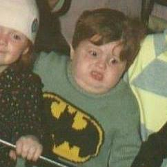

Zuverlässig, Neugierig, Engagiert
Zu meiner Person
- Geburtstag: 03.01.1992
- Nationalität: CH & LI
- Wohnort: 9000, St. Gallen
Sprachen
- Deutsch
- Englisch
- Französisch
- Norwegisch
Hobbies
- Sport (Fahrrad fahren, Laufen, Snowboarden)
- Lesen
- Musik hören
- Fotographie
Kontakt